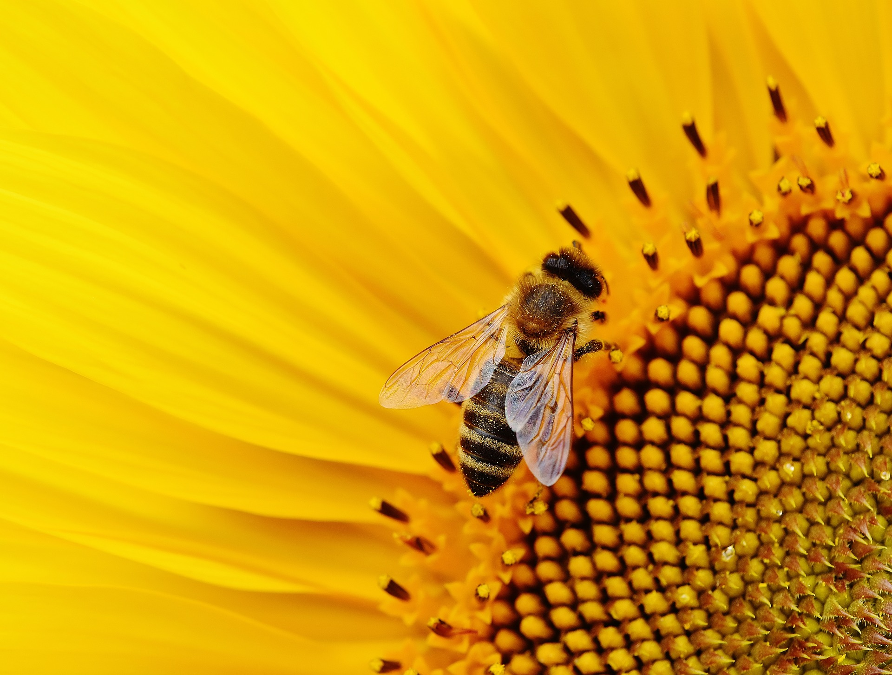

Helping Pollinators
About Pollination
What is pollination?
Pollination is the process of transferring the male reproductive organ flower to female stigma. To help them, use different mixture of plants on your garden/yard that will attract a variety of pollinators.
Who are the pollinators?
A pollinator is an animal that transfer flower to flower reproductive organ. As they visit a flower they receive a nectar and pollen. The pollinating animals are bats, bees, beetles, birds, butterflies, moths, wasps and other unusual pollinators.
Why are pollinators important to us?
- These pollinators help pollinate over 75% of our flowering plants
- In United States, pollinated crops by honey bees produces more than $15 billion yearly.
- Foods and crops that are pollinated includes: almonds, apples, blueberries, chocolate, coffee, grapes, melons, peaches, pumpkins, vanilla, soybeans, strawberries.
- Pollinators support healthy ecosystems that clean the air, stabilize soils and it prevents erosion that holds the soil.
- Helping pollinators is essential to biodiversity as pollination is responsible for providing us a variety of foods.
Threats to pollinators and why we need to save them
Bees and other pollinators are slowly decreasing fo the reason that
Saving the bees

Why bees are dying? The main reasons of dying bees are pesticide use, parasite, habitat loss and climate change. Researchers estimate that one-third of honey bees in United States have been disappeared. Many bees died due to pesticide as it makes their immune system weak. However, reducing the use of pesticides or using a special pesticides for them might help the bees against varrea mites which is a known parasite that cause the loss of many bee colonies. Temperature change is also one of the major cause of habitat loss as bees failed to live in cold weather .
Why we need to save bees?Bees are one of the most important type of pollinators. They provide almost hundred of specific foods, they're most likely fruits and some vegetables. They also produce honey which is a sweet food substance that is ingredients to some foods that we eat.
"If the bees disappear, we’ll all be stung" This quote is from David suzuki who is known for criticizing governments for their inactivity to protect the environment. It basically means without bees, we would not be able to survive for long.
Saving the monarch butterflies

Why is Monarch butterflies in danger? The Monarch butterflies are now considered endangered species as it's population keeps decreasing. For the reason they're decrease includes, wildfires, pesticides and climate changes. Monarchs can't survive without milkweed plant as they only lay their eggs and caterpillars only eat milkweed plant. Some people cut down these milkweed plant so they can build housing, streets and buildings. In recent years there have been a lot of wildfires that have destroyed a lot of milkweed. Humans cut milkweed down in their own yards because it doesn’t smell very good or they think it is a weed. Too much use of Pesticides use could kill monarch butterflies. Most importantly is the Climate change gave negative impacts to monarch populations .
Why we need save monarch butterflies? They provide us foods by pollinating the flowers and crops so we need to save them.
Creating Habitat for Monarch butterflies
We can help these Monarchs by providing them a habitat to live, milkweed plants and careful use of pesticides.
- Use your backyard for Monarch Waystation. Monarch Waystation can be maintain in any location as long as monarchs has a shelter to live. Monarchs Waystation is a place to provide necessaries for monarchs such as, food, shelter and their reproduction. By joining thousands of people who have created these monarch habitats, you are contributing to conservations
- Grow milkweed plants. Monarch butterflies only lay their eggs on milkweed plant because it's the only food that caterpillars eat. Milkweed seeds are available on Gardener's supply company, you can also buy it on Amazon.
- Grow nectar-rich plants for monarch butterflies. They need to sip this nectar to produce successive pollination and sustain their migration. The nectar plants that they need includes, Sunflower plants, zinnia flowers and spider milkweeds.
- Use pesticides with care. Always make sure you know what's or who's casuing a damage on plants before using a pesticide. Use a row cover to block pests to spread diseases instead of spraying a pesticide.
- Finish their habitat. Complete their habitat by putting a mud puddling which where butterflies drink and plant trees where butterflies can rest during night.
Things you can do to help pollinators
Why bees are dying? The main reasons of dying bees are pesticide use, parasite, habitat loss and climate change. Researchers estimate that one-third of honey bees in United States have been disappeared. Many bees died due to pesticide as it makes their immune system weak. However, reducing the use of pesticides or using a special pesticides for them might help the bees against varrea mites which is a known parasite that cause the loss of many bee colonies. Temperature change is also one of the major cause of habitat loss as bees failed to live in cold weather .
Why we need to save bees?Bees are one of the most important type of pollinators. They provide almost hundred of specific foods, they're most likely fruits and some vegetables. They also produce honey which is a sweet food substance that is ingredients to some foods that we eat.
"If the bees disappear, we’ll all be stung" This quote is from David suzuki who is known for criticizing governments for their inactivity to protect the environment. It basically means without bees, we would not be able to survive for long.
Why is Monarch butterflies in danger? The Monarch butterflies are now considered endangered species as it's population keeps decreasing. For the reason they're decrease includes, wildfires, pesticides and climate changes. Monarchs can't survive without milkweed plant as they only lay their eggs and caterpillars only eat milkweed plant. Some people cut down these milkweed plant so they can build housing, streets and buildings. In recent years there have been a lot of wildfires that have destroyed a lot of milkweed. Humans cut milkweed down in their own yards because it doesn’t smell very good or they think it is a weed. Too much use of Pesticides use could kill monarch butterflies. Most importantly is the Climate change gave negative impacts to monarch populations .
Why we need save monarch butterflies? They provide us foods by pollinating the flowers and crops so we need to save them.
Creating Habitat for Monarch butterflies
We can help these Monarchs by providing them a habitat to live, milkweed plants and careful use of pesticides.
- Use your backyard for Monarch Waystation. Monarch Waystation can be maintain in any location as long as monarchs has a shelter to live. Monarchs Waystation is a place to provide necessaries for monarchs such as, food, shelter and their reproduction. By joining thousands of people who have created these monarch habitats, you are contributing to conservations
- Grow milkweed plants. Monarch butterflies only lay their eggs on milkweed plant because it's the only food that caterpillars eat. Milkweed seeds are available on Gardener's supply company, you can also buy it on Amazon.
- Grow nectar-rich plants for monarch butterflies. They need to sip this nectar to produce successive pollination and sustain their migration. The nectar plants that they need includes, Sunflower plants, zinnia flowers and spider milkweeds.
- Use pesticides with care. Always make sure you know what's or who's casuing a damage on plants before using a pesticide. Use a row cover to block pests to spread diseases instead of spraying a pesticide.
- Finish their habitat. Complete their habitat by putting a mud puddling which where butterflies drink and plant trees where butterflies can rest during night.
Things you can do to help pollinators
We need the help of pollinators! To help them we can do this 7 things at home to support the pollinators. These are the ways to save this poor bees, monarch butterflies and other pollinators.
What can you do to help pollinators?
- Plant different mixtures of flowers that blooms at different times of the year for summer, spring and fall.
- Plant a variety of flowers based in color, shapes and sizes. It's important to plant a varieties of flower as it attracts different types of pollinators.
- Avoid or Reduce pesticide use since pesticide gives negative impacts to pollinators. But if you still want to use pesticides to avoid pest problem just use it during night when pollinators aren't active. Don't ever use strong pesticide as it's considered toxic to bees and other pollinators.
- Allow caterpillars to eat some leaves since they're the larvae stage of butterflies. If you want them to damage all your plants just separate the plants for pollinators and for caterpillar.
- Plant native plants. This plants was known for being adapted to your local season and climate, soil and pollinators. Native plants provide enough nectar or pollen for pollinators.
- Provide shelter for pollinators as it gives support to pollinators. Also they need shelters so they can be from predators. Their shelters can be a dead tree trunk, dry bare ground, or man made houses for bees. But different pollinators has it's own nesting sites. Bees can use dead tree trunks or man made beehouse. Butterflies lay their eggs on some specific plants so their caterpillar can eat the leaves.
- Provide water for pollinators in order to survive. Honey bees needed water especially when it's very hot weather so that they maintain the temperature.